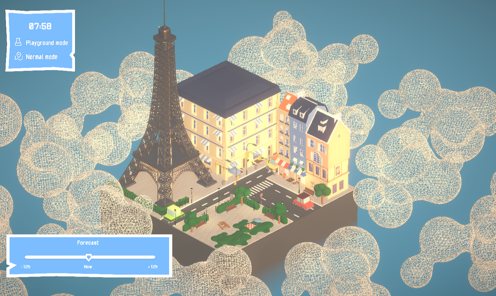
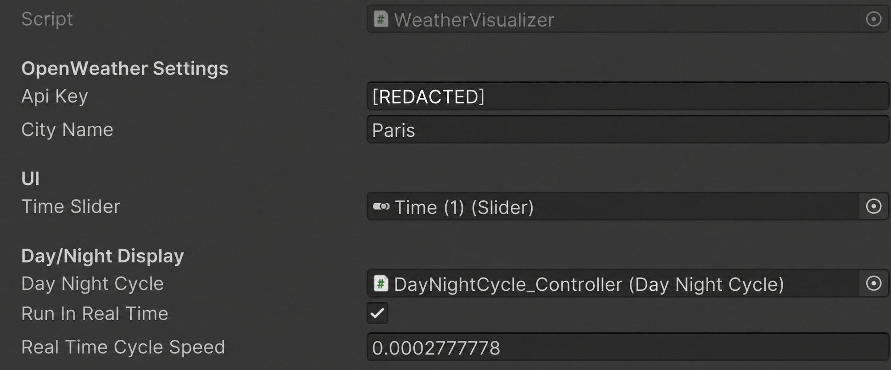
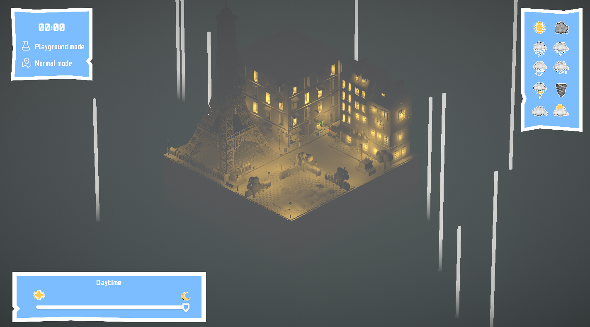

MétéoCraft
Live Paris weather becomes a playful, abstract world. Explore the forecast timeline, or try different conditions in Playground Mode.
WASD to move · Hold the right mouse button to rotate · Scroll to zoom.
About the Game
MétéoCraft is an abstract weather visualization game that transforms live weather data from Paris into dynamic artistic scenes. Using the OpenWeather API, players can view current conditions, explore a ±12-hour weather timeline, or use Playground Mode to experience every weather type.

Design Goals
The main design question was: How can weather be visualized without simply recreating its physical appearance?
Instead of only showing rain as rain or wind as wind, we explored how color, lighting, movement, shape, and sound could communicate different weather conditions. Sound was especially important for giving each weather state its own mood and identity.
Technical Goals
I wanted weather and time transitions to feel continuous rather than switching instantly. The main goals were creating a smooth day/night lighting cycle controlled by the timeline and smooth transitions between weather states when selecting different conditions.
Learnings

This project gave me experience with using APIs in Unity, working with post processing, and creating dynamic lighting and environmental systems from external data.
Challenges

One of the biggest challenges was creating a convincing day/night cycle, especially making lighting transitions feel natural across different times and weather conditions.
Another challenge was actually the fog around the island, we spent hours modifying the fog material so it works well in all weather conditions.